EL PUBLISHING
Free, classroom-ready resources for teaching English learners — built in a Mississippi high school, used in any of them.
Richard A. Daniel, M.Ed. · ENL/EL Specialist, Laurel High School · 31 years in Mississippi, Alabama and Georgia classrooms · NBCT ENL candidate
21 free resources. Everything opens in a browser and prints. Nothing needs an account, a license or a login.
Year-long maps, standards guides, libraries and reading programs.
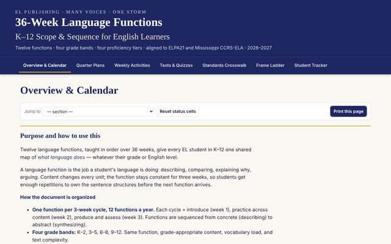
01K–12 Scope & sequence · K–12 · ELPA21Twelve language functions across four grade bands and four proficiency tiers: calendar themes, daily plans, texts with quizzes, a standards crosswalk, a sentence-frame ladder and a bilingual student tracker.
Open site →
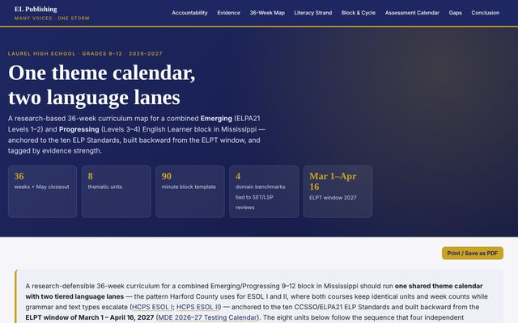
029–12 Curriculum map · 9–12 · ELPA21 Levels 1–4One theme calendar, two language lanes. Eight units mapped week by week with grammar ladders, ELP and MS CCRS codes, writing products, ELPA21 mirror tasks, a 90-minute block template and an assessment calendar built back from the ELPT window — every recommendation tagged by evidence strength.
Open site →
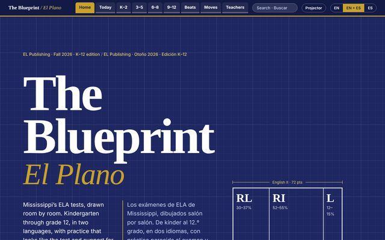
03K–12 Curriculum · K–12 · EN/ESBilingual guide to the Mississippi ELA standard blueprints: grade-by-grade reviews, practice passages and test-style items, Grammar Beats songs, four-lane supports, family pages and a lesson builder.
Open site →
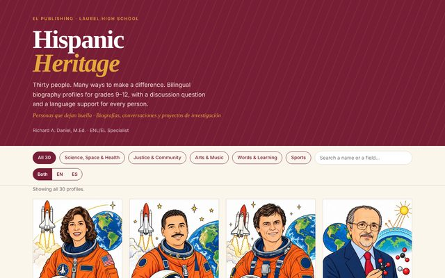
04Heritage Heritage · 9–12 · EN/ESBilingual biography profiles of thirty Hispanic figures with discussion prompts and classroom projects. Featured below.
Open site →
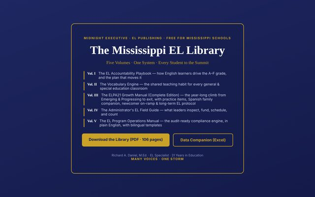
055 volumes Library · five volumes · K–12A free five-volume resource system for English-learner success in Mississippi schools: the shelf every EL teacher and coordinator in the state should have open.
Open the library →
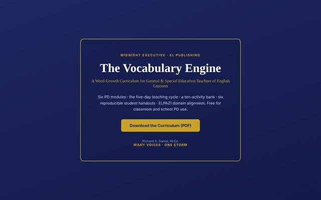
06ELPA21 Curriculum · vocabulary · ELPA21A five-day instructional cycle for academic vocabulary, with PD modules, ELPA21-aligned activities and reproducible student handouts as a free PDF.
Open site →
Practice platforms, games and apps that run in any browser.
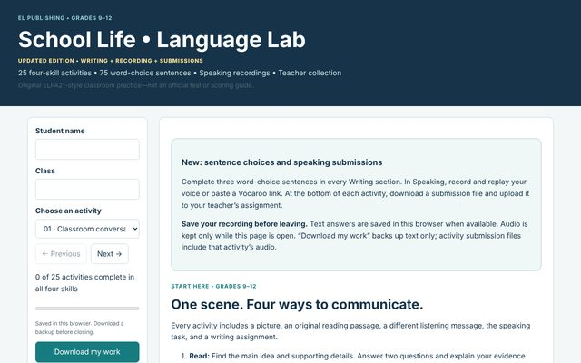
079–12 Practice · ELPA21 · 9–12Twenty-five four-skill ELPA21-style activities built around school-life scenarios: reading, listening, speaking and writing in the format students will see on the test.
Open workbook →
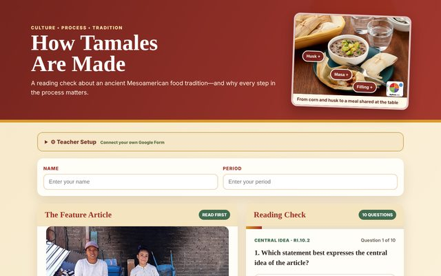
089–12 Lesson · Reading · 9–12Feature article plus five interactive activities, vocabulary matching and a student progress report. The text behind the sample-lesson breakdown.
Open lesson →
The 90-minute arc, the lane-by-lane differentiation and the reasoning behind a Storm Studio block, built on the How Tamales Are Made lesson. Read it before you run your first block.
Open the breakdown →
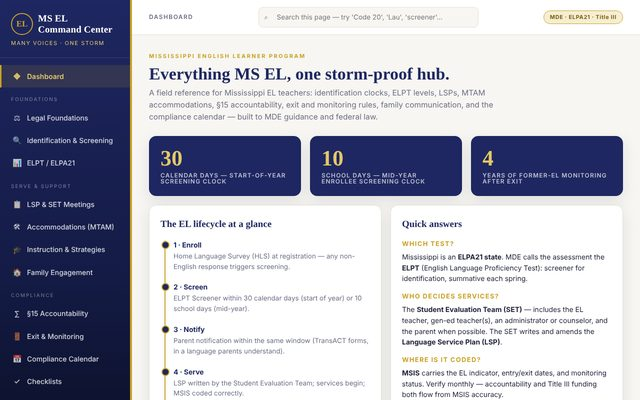
09Compliance Teacher app · complianceThe Mississippi EL teacher's reference hub: identification timelines, ELPA21 procedures, service plans, MTAM accommodations, §15 accountability and the documentation to prove it.
Open the app →
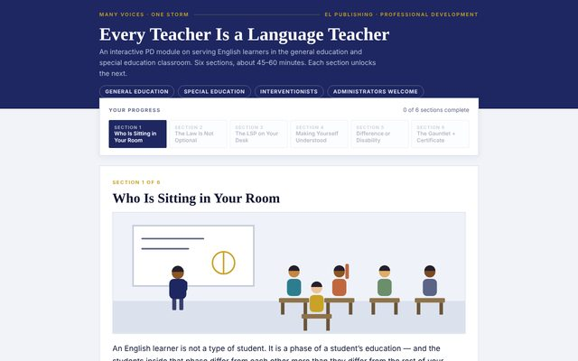
10PD PD module · 45–60 minSelf-paced professional development for general- and special-education teachers: six sections on supporting English learners in any classroom.
Start the module →
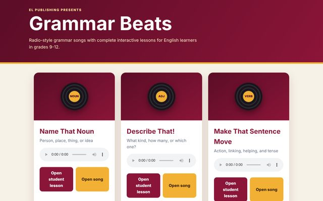
11Music Music · Grammar · 9–12Radio-style grammar songs with full interactive lessons: nouns, adjectives and verbs, each with an audio track and a student lesson built to the beat.
Press play →
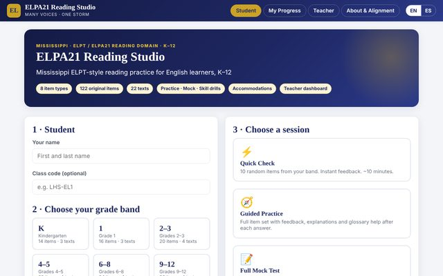
12K–12 Practice platform · ELPT Reading · K–12Mississippi ELPT-style reading practice for English learners: six grade bands, 122 original items, eight item types, mock-test conditions, accommodations, bilingual supports, levels, badges and a teacher dashboard.
Open the studio →
Issues for teachers and for students, in print and on the web.
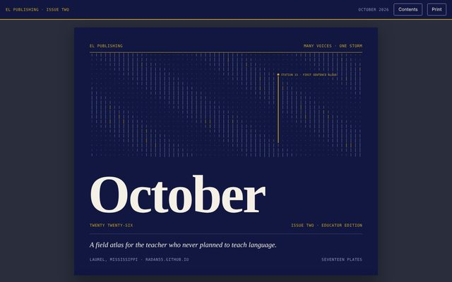
13Teachers Magazine · Teachers · Oct 2026"For the teacher who never planned to teach language." Sixteen plates on working with English learners in the general-education classroom.
Read issue →
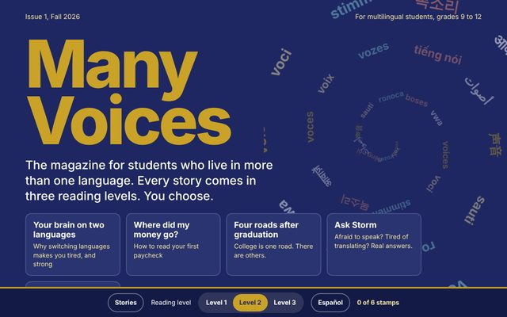
14Students Magazine · Students · Issue 1A magazine for multilingual high-school students: articles, interactive features, vocabulary tools and a teacher resource page.
Read issue →
Field guides and the book behind the work.
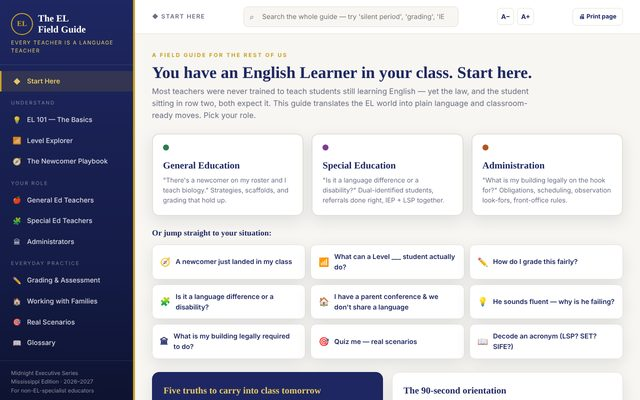
15All staff Field guide · every educatorPlain-language guide for general-education, special-education and administrative staff: identification, instruction, assessment and the legal obligations, with strategies you can use tomorrow.
Open the guide →
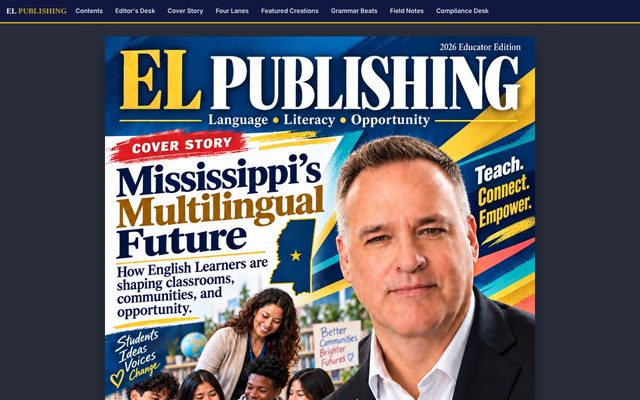
16Book Book · EL Publishing Issue OneTeaching English Learners in Mississippi's Overlooked Districts. A field manual for small districts with big obligations, published in the 2026 Educator Edition.
Read it →
Printable one-pagers and ELPA21 practice packets.
Verified this month: Read Along in Google Classroom, SpeakingMonkey, MinuteMic, Brisk Boost and Google Translate Practice — what's new, what it costs, a four-lane classroom use for each, and a watch list.
Open the radar →
A one-page bulletin for content teachers: five findings from acquisition research with a classroom move attached to each, the eight SIOP components translated for a content classroom, paired content and language objectives, and a compliance corner.
Read the issue →
Sixteen pages of practice across all four domains, written in the format of the assessment: construct a claim, respond to a message, observe and report, state an opinion, follow instructions, academic lecture, informational set, short paragraph.
Download the packet →
The teacher edition: read-aloud scripts, question sets, proficiency look-fors at Emerging and Progressing, a four-lane version of every task from Newcomer to Challenge, answer keys and a two-axis scoring guide.
Download the packet →
EL Publishing is where I put the materials I build for my own classroom. Everything is designed around one idea: English learners do not need easier content, they need the language that carries it.
The resources assume a real high school — mixed proficiency levels in one room, content teachers with thirty students and one planning period, and a compliance file that has to hold up. Every packet includes a differentiated version for newcomers through challenge level, because that is what a single class period actually requires.